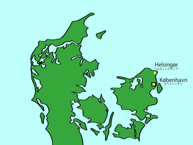

ヘルスィングウーアは，かつては商都として栄えていました．現在でも石畳の路地を散策すると，当時の雰囲気が伝わってきます．そのような路地の１つに，ブロストレーゼ（Brostræde）があります．
ここには，デンマーク一美味しいと言われているアイスクリーム屋さんがあります．1922年創業のこのアイスクリーム屋さんは，ブロストレーゼ・イース（Brostræde Is）という名前で，町の中心部にあります．昔懐かしい味がするということで有名です．
また，ヘルスィングウーアとスウェーデンのヘルスィングボリ（Helsingborg）の間をフェリーが行きかっています．フェリーの所要時間は約20分と，とても短いので，ヘルスィングウーアには季節を問わず多くのスウェーデン人が訪れます．